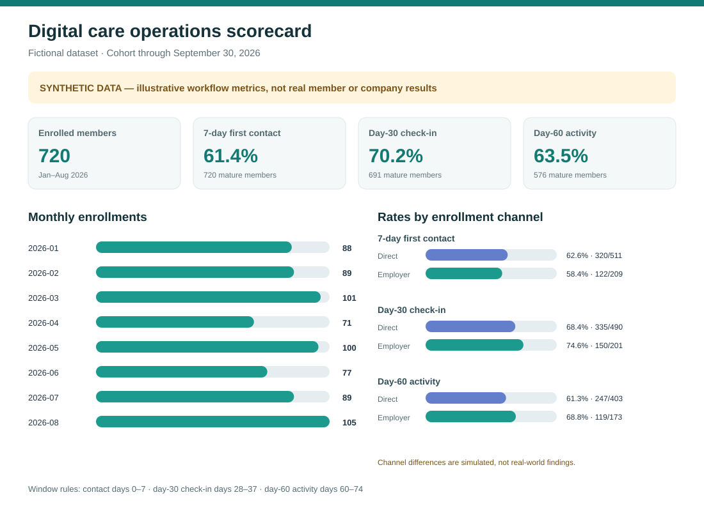

Operations scorecard

The scorecard uses mature cohorts, so each denominator has had the full follow-up window before the snapshot date.
How a team could use this
Operations can monitor enrollment and timely follow-up; coaching teams can investigate gaps by channel; data partners can reconcile event definitions and cohort cutoffs. In a real program, a persistent difference would prompt a workflow review before anyone assumes a cause.
Interpretation: These generated rates demonstrate reporting logic only. The project has no clinical outcomes and makes no claim about a real health program.
Metric definitions
| Measure | Definition | Eligibility window |
|---|---|---|
| 7-day first contact | Members with completed coach contact ÷ eligible enrollments | Contact day 0–7; enrolled by Sep 23, 2026. |
| Day-30 check-in | Members with completed day-30 check-in ÷ eligible enrollments | Event day 28–37; enrolled by Aug 24, 2026. |
| Day-60 activity | Members with observed activity ÷ eligible enrollments | Event day 60–74; enrolled by Jul 18, 2026. Engagement proxy only. |
See the case study, SQL scorecard, Excel scorecard, data dictionary, and reproducible analysis.